Let
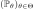
be a model and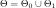
a partition into a null and an alternative hypothesis. A test is a measurable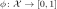
, interpreted as the probability of rejecting the null on observing ; it is non-randomised if it
takes only the values
; it is non-randomised if it
takes only the values  and
and  , and its rejection region is
then
, and its rejection region is
then 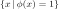
. Its power function is , its size is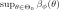
, and it has level if its size is at most .
if its size is at most .
For
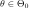
,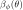
is the probability of rejecting a true null – the first kind of error; for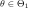
,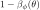
is the probability of failing to reject a false one, the second kind. The test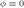
has size and power , and 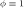
has size and power ; so neither error can be made small without
reference to the other.
Both statements are the definition of
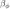
read under a on each side of the partition. For the two constant tests,
on each side of the partition. For the two constant tests,
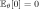
and for every,
which gives the stated sizes and powers.
Let
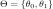
with densities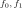
against a dominating measure , and let
, and let
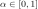
. Suppose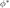
satisfies, for some ,
,
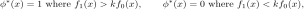
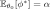
. Then maximises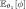
among all tests of level.
Let
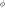
be any test with . Consider the function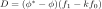
. At every it is
non-negative: where 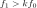
the first factor is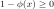
and the second is positive; where the first is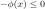
and the second is negative; where they are equal the second factor vanishes.
Integrating against ,
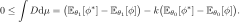
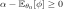
, so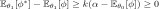
.
Any test that is most powerful at level and has size exactly
agrees with a test of the displayed form, except possibly on
the set where .
Let be most powerful of size and as in
the theorem. Both have size and, by maximality of each, the
same power, so the displayed inequality is an equality and
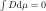
. Since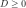
, it vanishes almost everywhere, which forces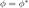
wherever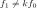
.
The randomisation allowed by letting take intermediate values
is not a mathematical nicety: with a discrete statistic there may be no
rejection region of size exactly , and without randomising,
the exact-size hypothesis of the theorem would be unsatisfiable. Beyond
two simple hypotheses the clean statement fails, and what survives is
the theory of uniformly most powerful tests for families with a
monotone likelihood ratio.